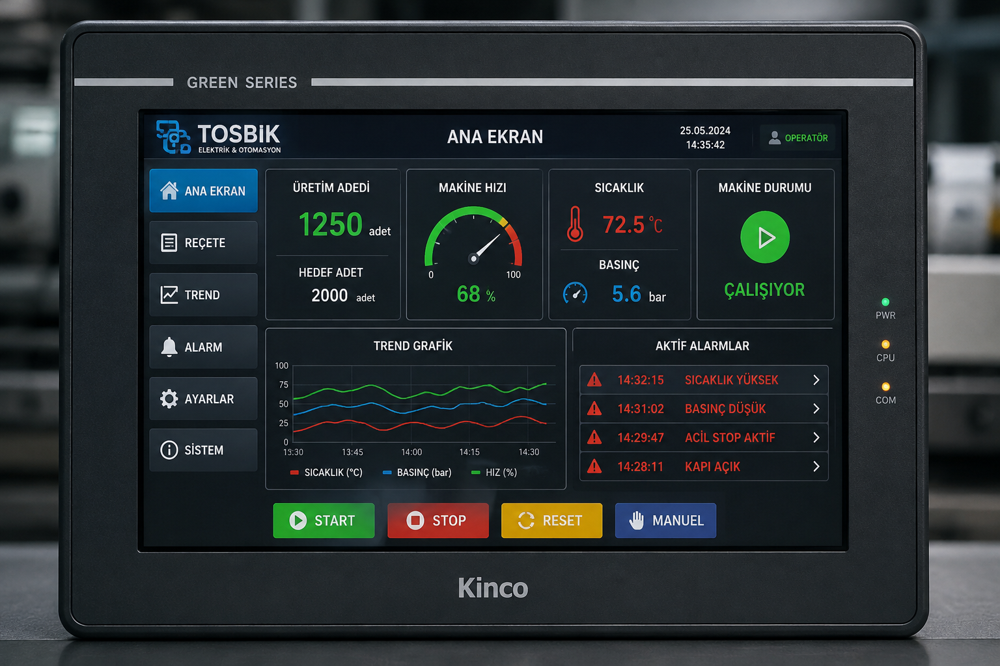

PLC sistemleriniz için modern, hızlı ve kullanıcı dostu operatör paneli ekranları tasarlıyoruz. Alarm ekranları, reçete sistemi, trend grafikler, veri kayıt sistemleri ve dokunmatik panel arayüzleri geliştiriyoruz.

Operatör paneli tasarımı, reçete sistemi, alarm ekranları, veri kayıt çözümleri ve modern dokunmatik panel arayüzleri geliştiriyoruz.
Kullanımı kolay, hızlı ve modern operatör paneli ekranları tasarlıyoruz.
Üretim süreçlerini kolaylaştıran kullanıcı dostu HMI ekranları hazırlıyoruz.
Ürün reçeteleri oluşturma, düzenleme ve hızlı seçim sistemleri geliştiriyoruz.
Operatörün arızaları hızlı görebileceği gelişmiş alarm yönetim ekranları hazırlıyoruz.
Üretim verilerini grafik olarak izleyebileceğiniz trend ekranları oluşturuyoruz.
Üretim bilgilerini hafızaya, USB belleğe veya SD karta kaydeden sistemler geliştiriyoruz.
Türkçe, İngilizce ve farklı dillerde çalışabilen panel ekranları hazırlıyoruz.
Operatör, bakım ve yönetici seviyelerinde güvenli kullanıcı giriş sistemleri oluşturuyoruz.
Panel yazılımı güncelleme, revizyon ve teknik destek hizmeti sunuyoruz.
Operatörlerin makineleri daha kolay, güvenli ve verimli kullanabilmesi için modern HMI çözümleri geliştiriyoruz.
Kullanıcı dostu, sade ve hızlı çalışan operatör panel ekranları tasarlıyoruz.
Trend grafikler, sayaçlar ve üretim verilerini tek ekranda takip etmenizi sağlıyoruz.
Alarm geçmişi, hata açıklamaları ve operatör uyarıları ile arızalara hızlı müdahale edilir.
Türkçe, İngilizce ve ihtiyaç duyulan diğer dillerde panel ekranları hazırlıyoruz.
Üretim bilgilerini hafızaya, USB belleğe veya SD karta kaydeden sistemler geliştiriyoruz.
HMI yazılımı güncelleme, revizyon ve teknik destek hizmeti sunuyoruz.
Dokunmatik operatör paneli tasarımı, HMI yazılımı ve teknik destek hizmetlerini Bandırma ve çevresindeki işletmelere sunuyoruz.
Operatör paneli tasarımı, reçete sistemi, alarm ekranları, trend grafikler, veri kayıt, çok dilli arayüz ve HMI teknik destek hizmetleri sunuyoruz.
Operatör paneli tasarımı ve HMI yazılım hizmetlerimiz hakkında en sık sorulan sorular.
Operatörlerin makineleri güvenli ve verimli kullanabilmesi için modern, anlaşılır ve hızlı çalışan HMI ekranları geliştiriyoruz.